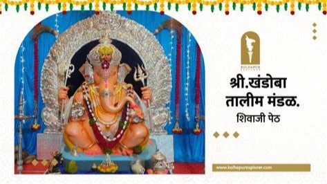

खंडोबा तालीम मंडळ,छ. शिवाजी पेठ
स्थापना - १९१३कोल्हापुरातील मानाचे स्थान असणारी तालीम म्हणजे श्री. खंडोबा तालीम मंडळ. शिवाजी पेठे मध्ये श्री खंडोबा मंदिर आहे.या मंदीराचे वैशिष्ट्ये म्हणजे शिवलिंगावर दोन लिंग आहेत. मोठ्या प्रमाणामध्ये येथील देवाचा उत्सव साजरे केले जातात. या देवतेच्या नावावरून येथील तालमीला नाव देण्यात आले. शिवाजी पेठेचा राजाम्हणून या मंडळाला ओळखले जाते. या तालमीचे वैशिष्ट्ये म्हणजे गणेश आगमन व गणेश विसर्जन मिरवणूक मध्ये हजारो कार्यकर्ते आवर्जून उपस्थिती लावतात. तालमीची विसर्जन मिरवणूक पाहण्यासारखी असते. तालमीचा फुटबॉल अकॅडमी व फुटबॉल संघ आहे तसेच क्रिकेट संघ आहे. आतापर्यत अनेक परितोषिक तालमीने मिळवले आहे. मर्दानी खेळामध्ये तालमीचा हातखंडा आहे. आजही आनंदराव पोवार प्राचीन युद्ध-कला प्रशिक्षण संस्था याच्या माध्यमातून मर्दानी खेळाचे प्रशिक्षण दिले जाते. मंडळाच्या वतीने त्र्यंबोली उत्सव मोठ्या प्रमाणात साजरा केला जातो. तालमीची नव्याने आकर्षक दगडी इमारत बांधली आहे.
Khandoba Talim mandal